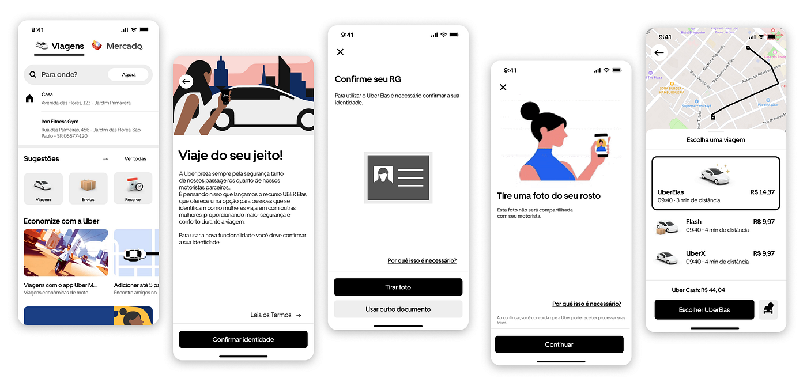
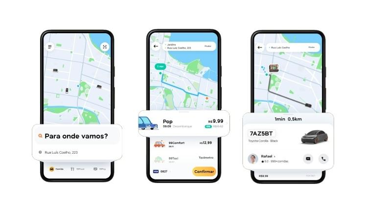
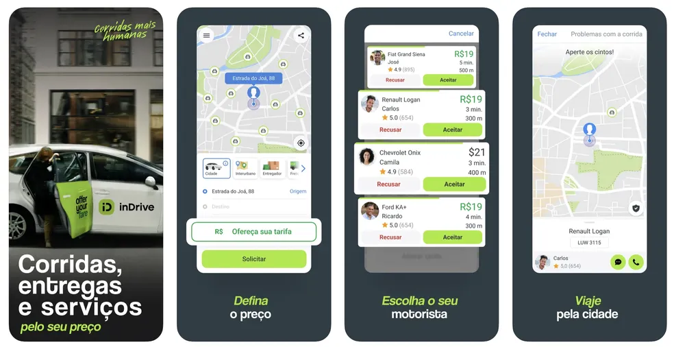

Foca no usuário por conveniência. Atende desde o público corporativo (Uber Black/Reserve) até o uso cotidiano (UberX). Sua persona busca previsibilidade e o menor esforço cognitivo possível.
Foca no usuário por custo-benefício. Atrai um público sensível a preço e usuários de serviços financeiros, utilizando o ecossistema 99Pay para fidelizar classes C e D.
Foca no usuário por controle. Atende pessoas que se sentem "reféns" dos algoritmos de preço dinâmico e preferem o modelo de negociação direta (barganha).
Mobile (Principal): É o ambiente nativo de todos. A UX é desenhada para o contexto de "uso em movimento" (alta luminosidade, uma mão só, decisões rápidas).
É a única com interface robusta para navegador (://uber.com). Permite pedir viagens e gerenciar perfis corporativos com layout responsivo.
Utilizam o desktop apenas como portal informativo e de suporte. A jornada de pedir uma corrida é bloqueada ou limitada, forçando o download do app (estratégia de retenção).
Oferece agendamento antecipado (Reserve), integração com transporte público e foco em segurança (U-Check, gravação de áudio).
Oferece desde motos e táxis (uso de corredores exclusivos) até uma carteira digital que rende juros (99Pay).
A funcionalidade central é a oferta de preço pelo passageiro e a contraproposta do motorista. Diferente dos outros, permite escolher o motorista manualmente por modelo do carro ou avaliação.

Cores: Monocromático (Preto/Branco). Transmite seriedade e luxo. Menu: Hierarquia clara. O campo de busca Para onde? domina a tela inicial (Lei de Fitts: foco no objetivo).

Cores: Amarelo vibrante. Cor de atenção que estimula a percepção de "oportunidade" e "desconto". Menu: Interface mais saturada (ruído visual). Muitos ícones e banners de descontos que competem pela atenção do usuário.

Cores: Verde limão e azul. Diferenciação visual imediata dos concorrentes. Menu: Focado em inputs numéricos (teclado para preço) e listas verticais (ofertas dos motoristas), fugindo do padrão de "apenas um botão de confirmação".
mostra publicamente um seletor com muitos idiomas no site, incluindo Português (Brasil), Português (Portugal), English, Español, Français, Deutsch, Italiano, 日本語, 한국어, العربية, हिन्दी, Türkçe, 简体中文, 繁體中文 e vários outros. Eficas na tradução, traduzindo todas as palavras corretamente e automaticamente.
O aplicativo 99 apresenta suporte a poucos idiomas, sendo eles inglês (EUA), português (Brasil) e chinês simplificado. Em comparação com seus concorrentes, como o inDrive, o app se mostra menos completo nesse aspecto, indicando um foco mais regional, especialmente no público brasileiro. Embora isso facilite o uso para usuários locais, pode limitar a acessibilidade para usuários internacionais.
O inDrive apresenta suporte a diversos idiomas, incluindo português, inglês, espanhol, francês, árabe e vários outros, indicando que o aplicativo possui alcance global. A interface exibe os idiomas tanto na língua original quanto em inglês, facilitando a escolha pelo usuário. Entretanto, não é possível garantir que todas as funcionalidades estejam completamente traduzidas em todos os idiomas disponíveis.